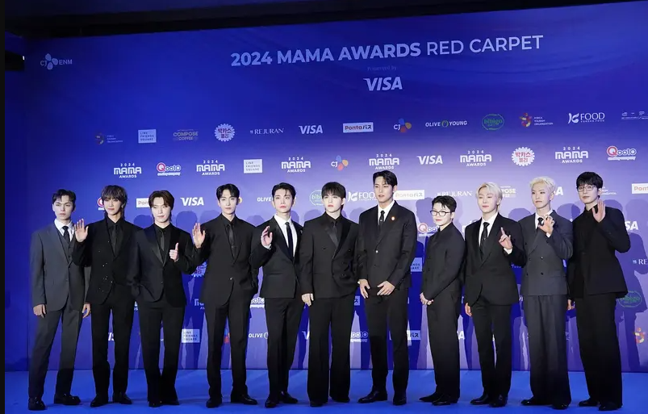

SEVENTEEN FOREVER
了解更多沒關係的 你的世界 此刻你原本的模樣 即無比的珍貴 以瞬間成長的面貌，明天也像孩子般生活 保持你本身的模樣即可，像大小孩一樣 — seventeen -kidult
SEVENTEEN成員按照年紀排序，有各自的編號， 按照順序為S.COUPS、JEONGHAN、JOSHUA、JUN、HOSHI、WONWOO、WOOZI、THE 8、MINGYU、DK、SEUNGKWAN、VERNON、DINO 問候語（打招呼口號）為「Say the name, SEVENTEEN」， 同時左手比1，右手比7，並將兩手向前伸再彎曲交疊。
其中，1997年生的三位成員裡THE 8的藝名中含有8，並且其喜歡數字8，所以將原本的年齡順序DK、MINGYU、THE 8換成了應援順序THE 8、MINGYU、DK， 此編號方便參加需要直播的音樂放送等節目時，能夠快速點名，確認成員是否到位，除此之外歌曲應援詞包含成員名字的部分，也都使用這個順序由S.COUPS擔任總隊長及Hiphop Team隊長，WOOZI擔任Vocal Team隊長，HOSHI擔任Performance Team隊長。另外，由三個小分隊隊長組成的SVT LEADERS。[2]。 除此之外還有四個子團體，由DK擔任隊長與HOSHI和SEUNGKWAN組成的BSS（夫碩順），由Dino擔任隊長JEONGHAN和WONWOO組成的JxW（或稱JEONGHANxWONWOO），由HOSHI和WOOZI組成的HxW（或稱HOSHIxWOOZI），以及由MINGYU擔任隊長與S.COUPS組成的CxM。

團體名字「SEVENTEEN」寓意為「13名成員+3個分隊+1個整體」，2016年2月14日，公開官方粉絲名稱「CARAT克拉（캐럿）」取自於鑽石的質量單位 比喻SEVENTEEN是像鑽石一樣閃耀的存在，隨著CARAT的數量增加SEVENTEEN的價值也越高。